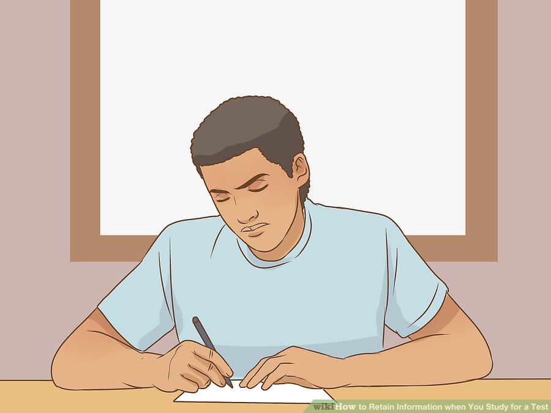
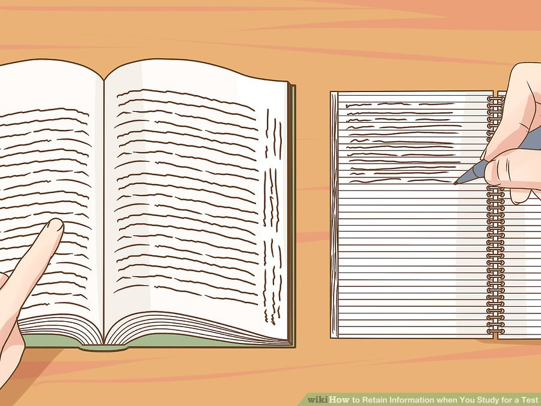
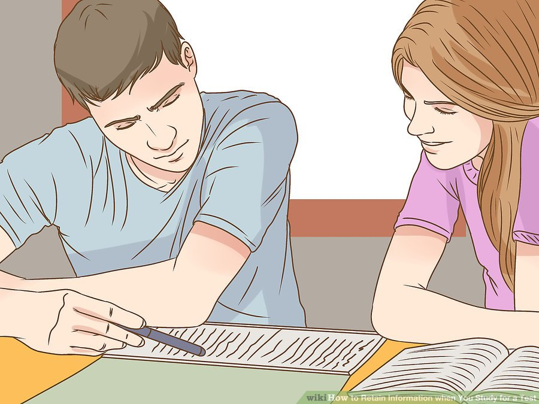
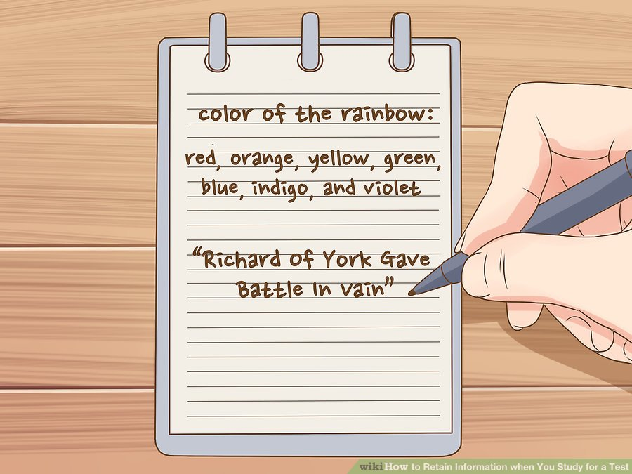
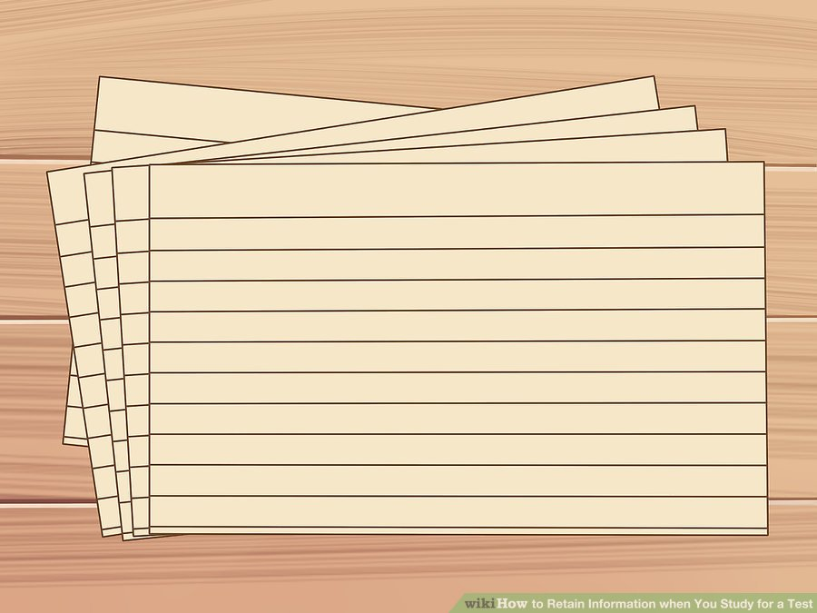
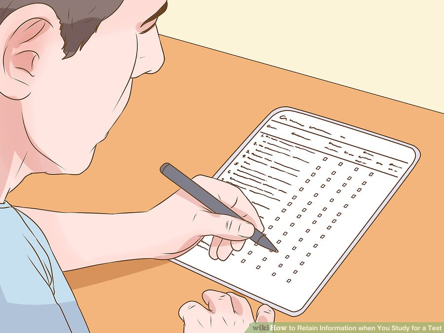
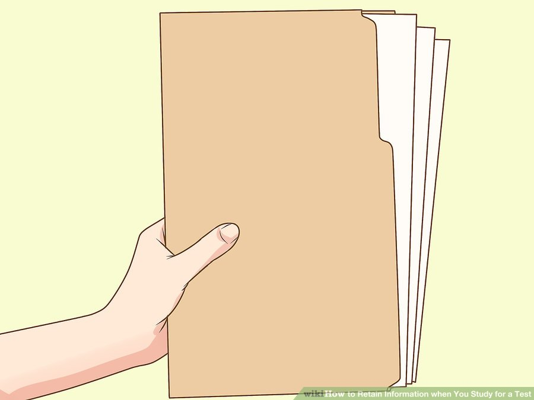
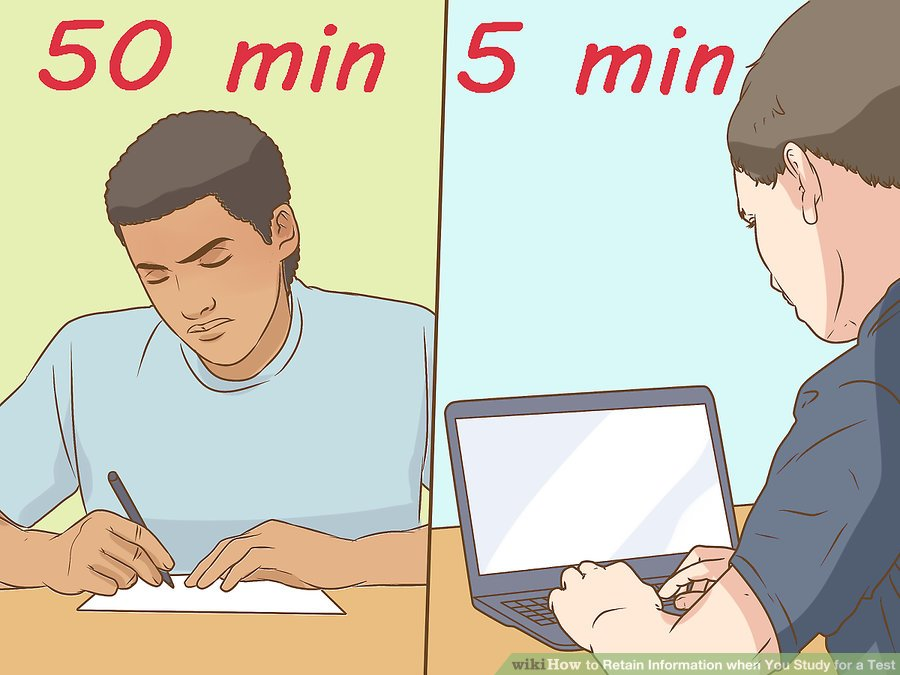
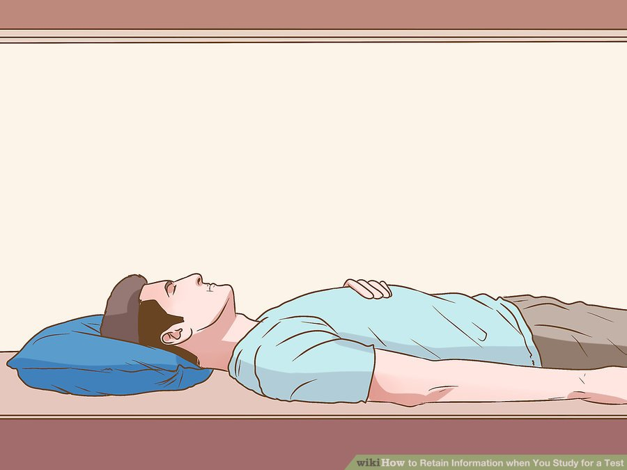

How to Retain Information When You Study for a Test
Studying for a test requires a lot of memorization, which can feel overwhelming. If you want to adequately prepare for an exam, there are ways you can improve memorization.
Engage with the materials when studying. Read actively and take notes. Use effective techniques, like flash cards and mnemonic devices. Make sure you manage your study schedule carefully.
A solid schedule, including a good night's sleep, can help you have the energy to study.
Method 1: Engaging With The Material
- Read actively. You won't retain information if you just casually read the material. When you're re-reading for a test, or reading new information, do so actively. This will help you remember the information better when a test arrives.[1]
- It's easy to read a whole page and realize you took in nothing. If you notice your mind wandering, return it to the text.
- Ask yourself questions when you read. For example, ask, "What is the main point of this section?" It can help to underline as you go and write down notes in the margins.

- Summarize chapters after reading them. You shouldn't study in one big session. You will end up feeling overwhelmed. If you summarize each chapter as you go, you will better retain the information later. When you finish a section of a textbook, close the book for a moment and briefly summarize the information in your head.[2]
- You can also summarize the information by writing it down, which may help you remember it better.
- You can also recite the information to yourself out loud, as this may also help you remember it.
- If you're a visual learner, try drawing pictures, charts, or graphs of a chapter's material after you finish it.

- Take notes. Many students take notes during class. While this is a great tactic, you should also take notes while you're reading and studying alone. Putting the information into your own words as you go will help you remember it better later on.[3]
- Try to take notes actively. Do not just, for example, copy down definitions and concepts into a notebook. Try to phrase them in your own words. This will help you better understand, and therefore retain, the information you've learned.
- You should also make sure your notes stay organized. Use headings to label the notes by chapter and section. You should also date the notes, especially notes you take in class.

- Explain the material to someone else. If you're studying with another student, it can actually help to explain the information. Study groups can be helpful. If someone is struggling with a concept, having you explain it to them may help both of you better understand and retain the material.[4]
- If you don't know anyone in your class, you can always ask a roommate or friend if you can explain the information out loud to them.
Method 2: Using Effective Study Skills
- Take a learning-style quiz to find out the best way for you to study. A learning style quiz can help you learn whether you're a visual, auditory, or tactile learner. After you take the quiz, you can tailor your study approach to your learning style so it's more effective. You can find a learning-style quiz online by searching "Learning-style quiz" or "What kind of learner am I quiz."
- If you're having trouble finding a quiz, try taking the one at http://www.educationplanner.org/students/self-assessments/learning-styles-quiz.shtml.
- Write out information by hand. Copying information over and over again can help commit it to your brain. When you write, you will be actively thinking about the words you're reading. If you're really struggling to retain a particular concept, vocabulary word, date, name, or other aspect of your course material, try writing it down a few times. You may remember it better later on.[5]
- If you don't like handwriting, you can also type out your notes again and again. Just make sure to pay attention to what you're typing.
- You can also try copying your own notes. You may understand terms better if they're already phrased in your own words. This can help you retain the information later on.

- Use mnemonic devices. Mnemonic devices are means of associating new information with phrases, terms, or images. Many people use mnemonic devices to help them commit new material to memory. For example, "Richard Of York Gave Battle In Vain" is a mnemonic device many use to remember the colors of the rainbow, as the first letter of each word in the sentence corresponds to a color of the rainbow: red, orange, yellow, green, blue, indigo, and violet.[6]
- If there isn't a well known mnemonic device for the material you're trying to learn, you can make up your own. Have fun and be creative. Make up a visual you can easily remember and use to recall information later.
- Make associations with the material. In addition to mnemonic devices, you can make other associations that help you retain information. You can make visual associations in your mind, for example, or look for certain patterns.[7]
- For example, say you're trying to remember John Steinbeck wrote East of Eden. You have a friend named Eden and a friend with the initials J.S.
- In order to remember this information, picture your friend with the initials J.S. standing next to your friend Eden. Imagine the two of them holding compasses pointing in the direction east.

- Make flashcards. Flashcards are a wonderful way to help you retain information. They are particularly helpful when trying to remember things like dates, names, and vocabulary terms.[8]
- You can make flash cards by writing information on either side of the card. For example, say you're making flashcards for vocabulary terms. Use index cards. Write the definition on one side and the word on the other.
- If you don't want to make physical flashcards, there are many websites that allow you to make flashcards online.

- Test yourself on the materials. Testing yourself is one of the best means to retain information. Merely re-reading or studying the information is not as effective as actually testing yourself on the materials. In the weeks leading up to the exam, test yourself frequently.[9]
- You can make up your own test by writing down questions as you re-read your notes and course materials. Think of questions that are likely to be on an exam. When you get done reviewing, try to answer your own questions.
- You can also see if your professor provides practice tests. You should take any practice tests your teacher offers, as this will help prepare you for the exam.
- If you have any old quizzes lying around, try retaking them.
- Look up online quizzes for the material you're studying and use them to test yourself.
- Review the material regularly so you retain it better. Studies show that when students review the material they learned 3 times within a month of learning it, they're much more likely to retain that information. Within 24 hours of learning the material, review it for 10 minutes. Then, 7 days after you learned the material, review it for 5 minutes to get back up to speed. Finally, 30 days after you learned the material, you'll only need to go over it for 2-4 minutes for your brain to remember it![10]
- Instead of waiting until the day before your test to start studying, go over it during brief sessions throughout the month. Then, when your test comes around, you'll be more likely to remember it all.
Method 3: Managing Your Lifestyle

- Organize your supplies. You will have a harder time studying if you are disorganized. In order to make your study sessions most efficient, organize your supplies ahead of time.[11]
- Make sure to separate materials by class. Keep a folder where you keep all your notes, past papers, and old quizzes.
- Keep your study area organized. If your study area is very messy, this can affect concentration. Tidy up your study area after each study session.

- Take breaks. You will not retain information if you try to cram it in all at once. Instead of studying for hours on end, stick to reasonably timed study sessions with breaks in between.[12]
- Keep yourself on a schedule regarding breaks to make sure they don't take too much time. You can, for example, agree on 50 minutes of studying and then 5 minutes of break time.
- Make sure to time your breaks. A 5 minute internet break can easily turn into an hour internet break unless you're diligent about setting a timer.

- Get enough sleep. You cannot retain information unless you're getting a solid night's sleep each night. Make sure to go to bed at a reasonable hour, and aim for a full night's sleep each day.[13]
- Sticking to a sleep schedule will help you fall asleep faster. If you go to bed and wake up at roughly the same time each day, your body's natural circadian rhythm will adapt
- You should also engage in a relaxing ritual before bed each night. Try reading a book or taking a warm bath. Avoid electronic screens, as these can make sleep more difficult.
- Exercise regularly. Regular physical activity can actually increase your brain's ability to retain information. Aim for half an hour of aerobic exercise a day to maximize your ability to recall information.[14]
- Pick a form of exercise you enjoy, as you'll be more likely to stick to it.
- If you're very busy, see if there's a way to incorporate exercise into your daily routine. You can, for example, bike to class instead of walking or taking the train